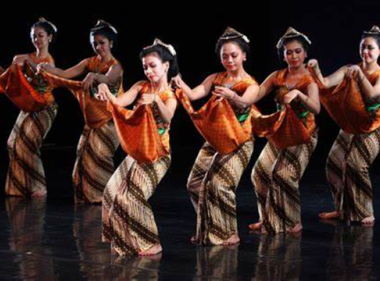

Home
Materi
Quiz
Contact
By: Nila Permata Sari
Seni Budaya
SMP Kelas 7
SMP Kelas 7
Pola Lantai Dan Level Tari
KI 4 : MENGOLAH, MENALAR, DAN MENYAJI DALAM RANAH KONKRET DAN RANAH ABSTRAK TERKAIT DENGAN PENGEMBANGAN DARI YANG DIPELAJARI DISEKOLAH SECARA MANDIRI DAN MAMPU MENGGUNAKAN METODE SESUAI KAIDAH KEILMUAN KD 4.3: MEMERAGAKAN GERAK TARI SESUAI LEVEL DAN POLA LANTAI

POLA LANTAI
Pengertian
Pola lantai adalah posisi penari saat menampilkan tariannya. Pola tersebut berupa garis-garisyang dilewati seorang penari atau dalam formasi penari kelompok di atas panggung, secara singkatnya pola lantai merupakan bentuk bentuk yang dibuat menggunakan posisi para penari, seperti lurus, melingkar menyudut dan masih banyak lagi.

Fungsi
Fungsi pola lantai dalam tarian adalah untuk menentukan gerakan penari. Dengan begitu, pola lantai dan gerak tari dapat saling mendukung dalam tarian dan membuat gerakan semakin indah. selain itu pola lantai juga berfungsi sebagai penguasaan panggung, sehingga pada saat menari diatas panggung tidak membosankan atau monoton.
Halaman Selanjutnya
Halaman Selanjutnya